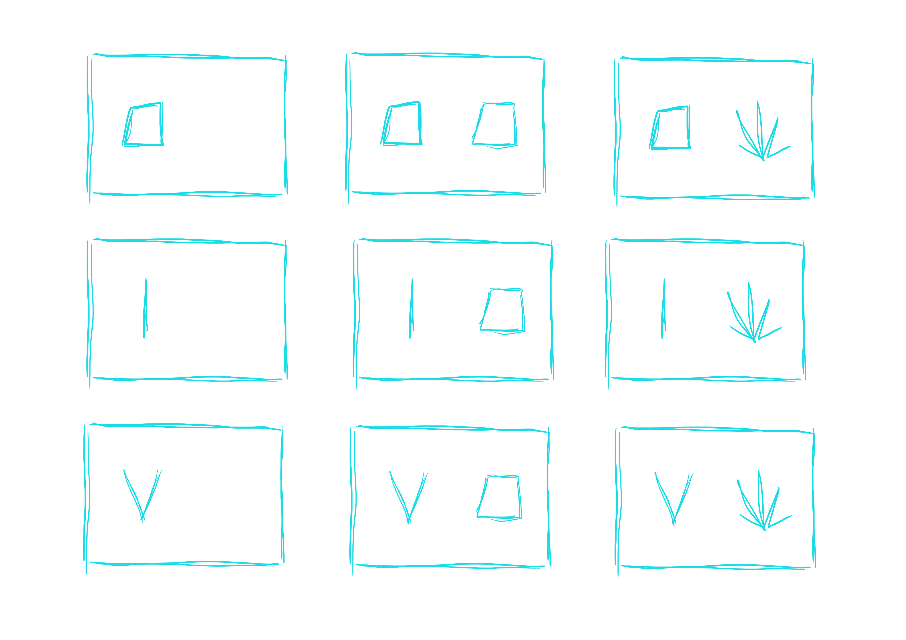

This project is a fictive expression of communication for the bacteria Aliivibrio Fischeri.
The first video takes a subjective approach to communication. The second video is an extract from an interactive installation that enables us to 'talk' to bacteria using hand gestures. To achieve this, I created a language based on certain gestures.
Softwares : Blender, Photoshop ,TouchDesigner
Language made with hand gestures
